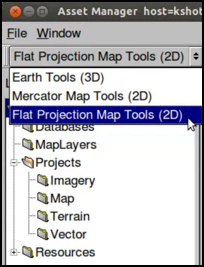

Map projection types in GEE 5.1.0¶
In addition to using Google Earth Enterprise Fusion to prepare and publish data in Google Earth EC, you can use it to prepare and publish map data in Google Maps.
Google Earth Enterprise 5.1.0 supports the following projection types for map databases:
- Mercator map—The Mercator map database includes the Google Maps layer and optionally uses the Google Base Map from google.com. It also uses a local copy of the Google Maps API that requires no communication with google.com.
- Flat Projection map—The Flat Projection map database uses the local copy of the Google Maps API that requires no communication with google.com.
Preparing map data
When you prepare map data, there are four components:
- Resources (vector and imagery)
- Map Layers (Flat projection and Mercator maps supported)
- Map Projects (map and imagery)
- Map Database
Vector and imagery resources
For Flat Projection maps, you can share the same vector and imagery resources for both Google Earth EC and Google Maps databases.
For Mercator maps, you can create Mercator-based imagery projects or your Mercator maps can share the same imagery resources as a Flat Projection map database by projecting the flat imagery as Mercator on the Fly. Now that your Mercator map databases can share the same imagery projects as a Flat Projection map databases, you can save on both storage space and database building time by eliminating the need for Mercator-based imagery.
For more information, see Add flat imagery to Mercator map databases in GEE 5.1.0.
Access map tools
With map databases, in addition to vector and imagery projects, you have the extra step of creating map layers. Defining a map layer includes adding resources and defining the display rules and filters for the layer.
You access the map tools from the toolbar of the Asset Manager dialog:
Open Fusion and click Tools > Asset Manager to open the Asset Manager dialog.
Select either Mercator Map Tools (2D) or Flat Projection Map Tools (2D) from the Asset Manager toolbar.

For information about creating map projects and databases, read the tutorial lesson, Creating a Map Database.